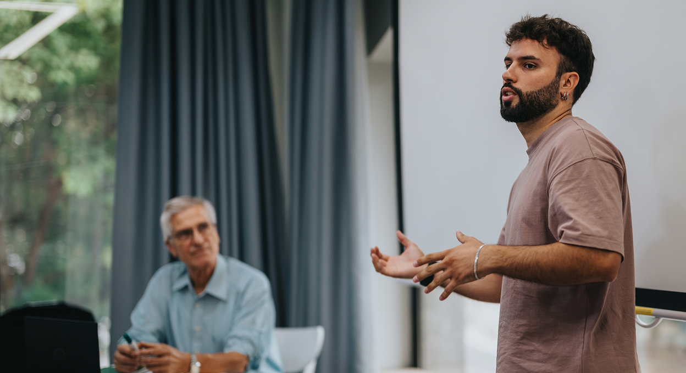

Working with
Built for the bold
We create a space for young business analysts to connect, learn and build lasting relationships.
-
Prospects & possibilities
We provide free professional and social events, skill-building competitions and networking opportunities; helping young BAs gain confidence and connections.
Join for free -

Knowledge-sharing
Through expert-led webinars, curated resources and industry partnerships, we equip our network with the latest tools and insights in business analysis.
Resources -
Peer-powered
We bring together driven individuals in a supportive space to share challenges, learn from one another and build lasting professional relationships.
Get involved -
Leading the way
We collaborate with industry leaders to champion the next generation of BAs.
Blog: A to B
Blog: A to B
-
5 Essential Tips for Young Business Analyst Professionals to Excel in their Career
Are you a young professional starting your journey as a business analyst? Do you aspire to thrive and advance in your career in the field of business…
Read article -
5 Myths About Business Analysts You Shouldn’t Believe
Hey there, young business analyst professional! If you've been navigating the world of business analysis, you've probably encountered some myths and…
Read article -
Business Analyst of the Year 2024: Kay Hardy
We're proud to announce that one of our founders, Kay Hardy, was crowned Business Analyst of the Year 2024 by AssistKD at the IRM BA Conference.
Read article -
Young BA Corner: Lauren Howes at the IRM BA Conference
Session Title: Growing Your Own BA's: Everything You Need to Know
Read article
Become a member
Join our growing network of young business analysts shaping the future of the industry.
Join for free